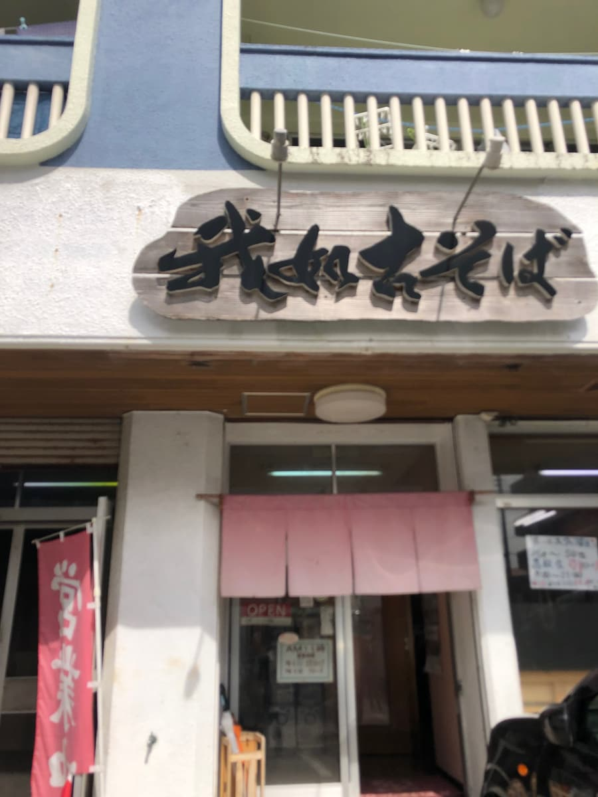
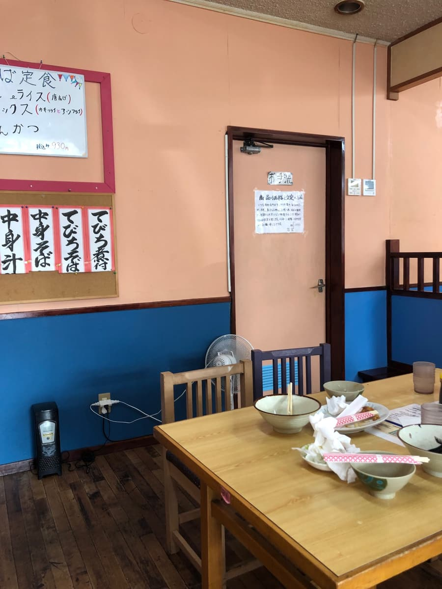
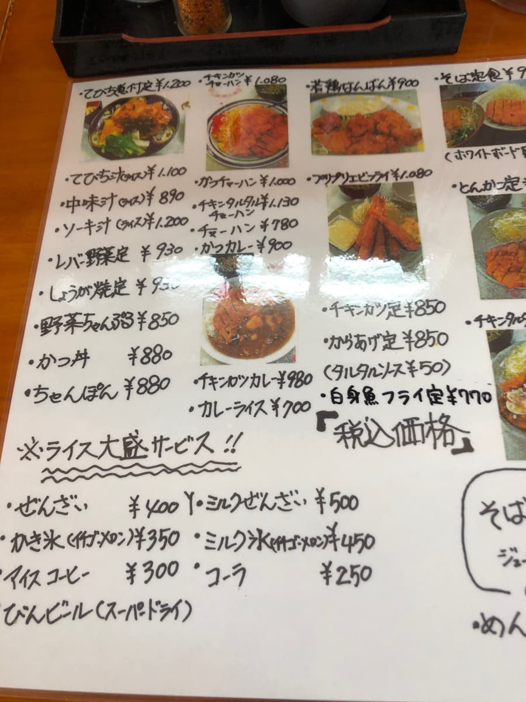
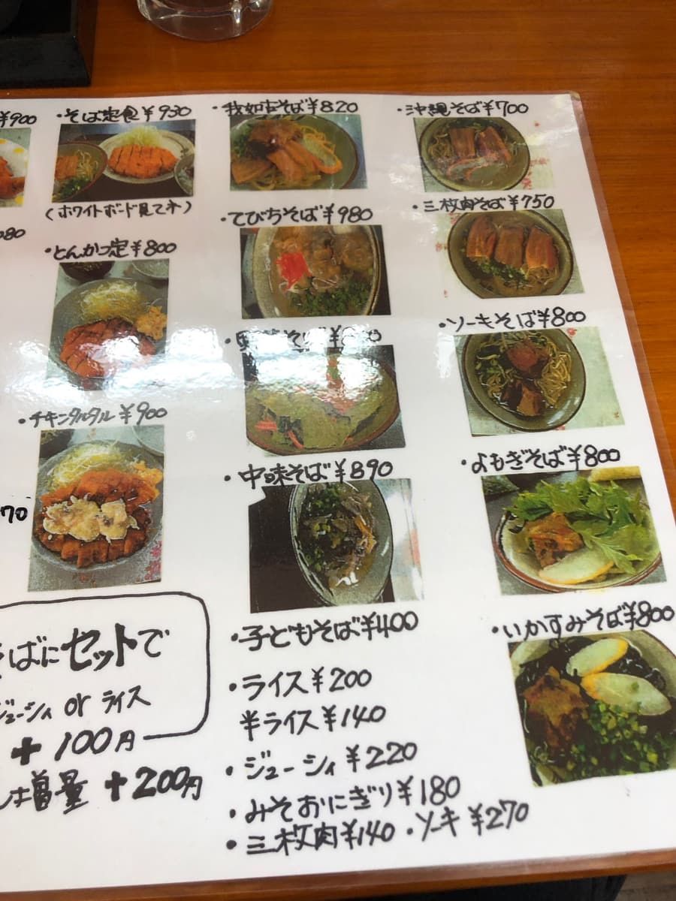
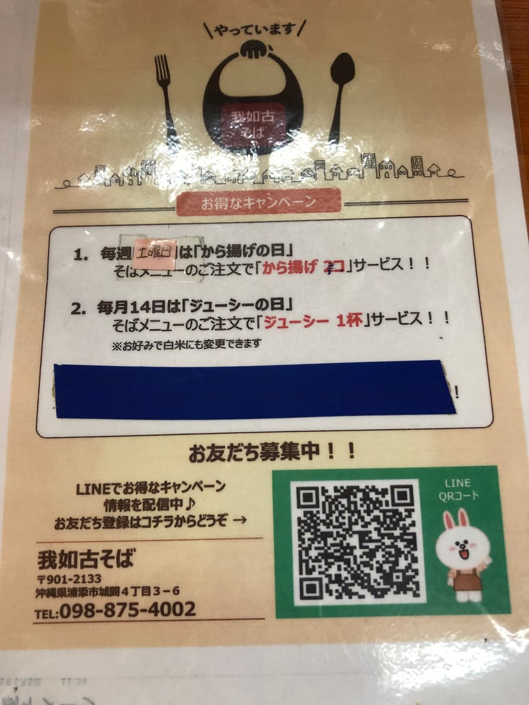
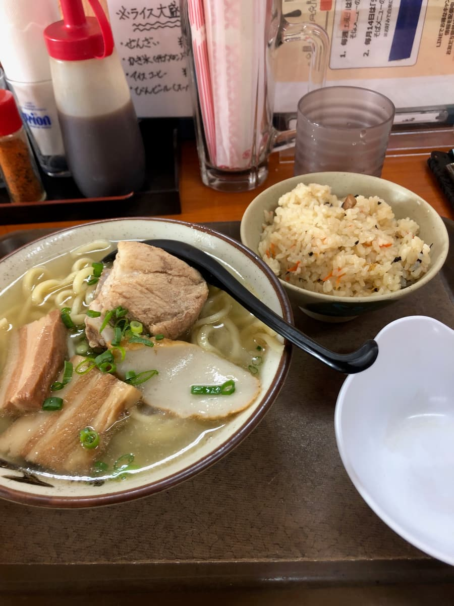
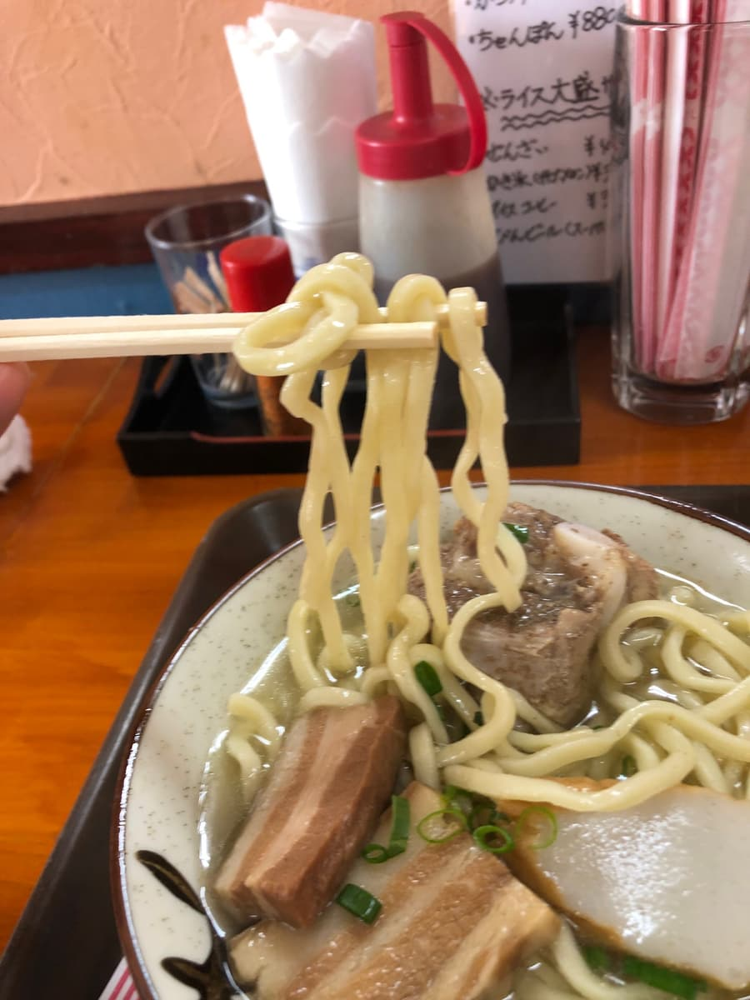

※이 글은 AI(Claude Opus 4.5)로 작성한 것에 제가 일부 가필·갱신했습니다😆 2025년 2월에 먹었습니다😄
이번에는 우라소에시 구스쿠마에 있는 '가냐코 소바'에 다녀왔습니다! 가게 외관을 보면 목제 간판에 '가냐코 소바'라는 글자가 인상적이네요. 분홍색 노렌(가게 천 간판)이 걸려 있어서 옛날식 오키나와 소바 가게 분위기가 감돌고 있습니다🏠

가게 안에 들어가면 오렌지색과 파란색 투톤 벽이 특징적이고, 어딘가 그리운 느낌의 식당 스타일입니다. 테이블석이 몇 개 놓여 있고, 벽에는 '테비치 조림' '나카미 소바' '테비치 소바' 등의 손글씨 메뉴가 붙어 있습니다✨




메뉴를 보면 오키나와 소바뿐 아니라 정식 메뉴도 충실하네요. '돼지족 조림(테비치) 정식' 1,200엔, '소키 국' 1,200엔, '돼지 내장(나카미) 국' 890엔, '간 채소 정식' 930엔, '생강구이 정식' 950엔, '채소 참프루' 850엔, '가쓰동' 880엔, '챰퐁' 880엔 등 오키나와 식당다운 풍부한 라인업입니다🍽️
오키나와 소바 계열 메뉴도 '소바 정식' 930엔, '오키나와 소바' 700엔, '삼겹살 조림(산마이니쿠) 소바' 750엔, '소키 소바' 800엔, '돼지족(테비치) 소바' 980엔, '돼지 내장(나카미) 소바' 890엔, '쑥 소바' 800엔, '오징어먹물 소바' 800엔 등 다양하네요. 어린이 소바가 400엔인 것도 가족에게는 반가운 포인트입니다👨👩👧
그리고 알뜰한 이벤트 정보도 발견했습니다! 매주 토요일은 '가라아게의 날'로, 소바 메뉴를 주문하면 가라아게 2개 서비스🎉 게다가 매월 14일은 '주시의 날'로, 소바 메뉴를 주문하면 주시(오키나와식 영양밥) 한 그릇 서비스라고 합니다. 원하면 흰쌀밥으로 바꿀 수도 있다고 해요. 오늘이 마침 14일이라서 주시를 서비스로 받았습니다! 럭키😆
이번에는 가게 이름과 같은 '가냐코 소바' 820엔을 주문했습니다. 잠시 기다리니 주시와 함께 나왔어요🍜

그릇 안에는 투명감 있는 돼지뼈 육수 국물에 굵은 면, 약간 곱슬진 면이 들어 있습니다. 고명은 삼겹살 조림(산마이니쿠) 2점과 뼈 있는 돼지갈비(혼소키), 그리고 어묵(가마보코)과 파가 올라가 있습니다. 보기만 해도 먹음직스럽네요😋
먼저 국물을 한 모금. 돼지뼈 육수의 순한 맛입니다. 잡내가 없고 마음이 놓이는 맛이네요. 간도 딱 좋아서 마시기 편한 국물입니다.

다음으로 면을 먹습니다. 굵은 곱슬면으로, 식감은 부드러운 편입니다. 오키나와 소바다운 소박한 맛이네요🍜
고명인 삼겹살 조림(산마이니쿠)과 뼈 있는 돼지갈비(혼소키)는 둘 다 담백한 간입니다. 삼겹살 조림은 적당한 비계와 살코기의 균형이지만 약간 힘줄 같은 질긴 식감이 있네요. 뼈 있는 돼지갈비도 마찬가지로, 간은 순하지만 힘줄이 남아 있는 부분이 있었습니다.
서비스로 나온 주시도 함께 먹었습니다. 이쪽도 담백한 간으로, 소박한 오키나와식 영양밥이라는 느낌입니다. 소바와 함께 먹으면 배가 부르네요🍚
가게 안을 둘러보니 현지 손님들이 많이 방문해서 북적이고 있습니다. 정식을 주문하는 분도 많아서, 현지 분들에게 사랑받는 가게구나 하고 느꼈습니다. 아주 평범한 오키나와 소바이지만, 이 '평범함'이 좋은 거죠😊
평가(9점/15점)：아주 평범하게 맛있는 오키나와 소바였습니다. 특별한 개성은 없지만, 현지 분들에게 사랑받는 이유를 알 수 있는 안심되는 한 그릇입니다. 정식 메뉴도 충실해서 오키나와 소바 이외의 메뉴도 먹어 보고 싶어지네요. 우라소에시에 오실 때는 꼭 들러 보시는 건 어떨까요?😊
면: ★★★☆☆（3）
수프: ★★★☆☆（3）
토핑: ★★★☆☆（3）